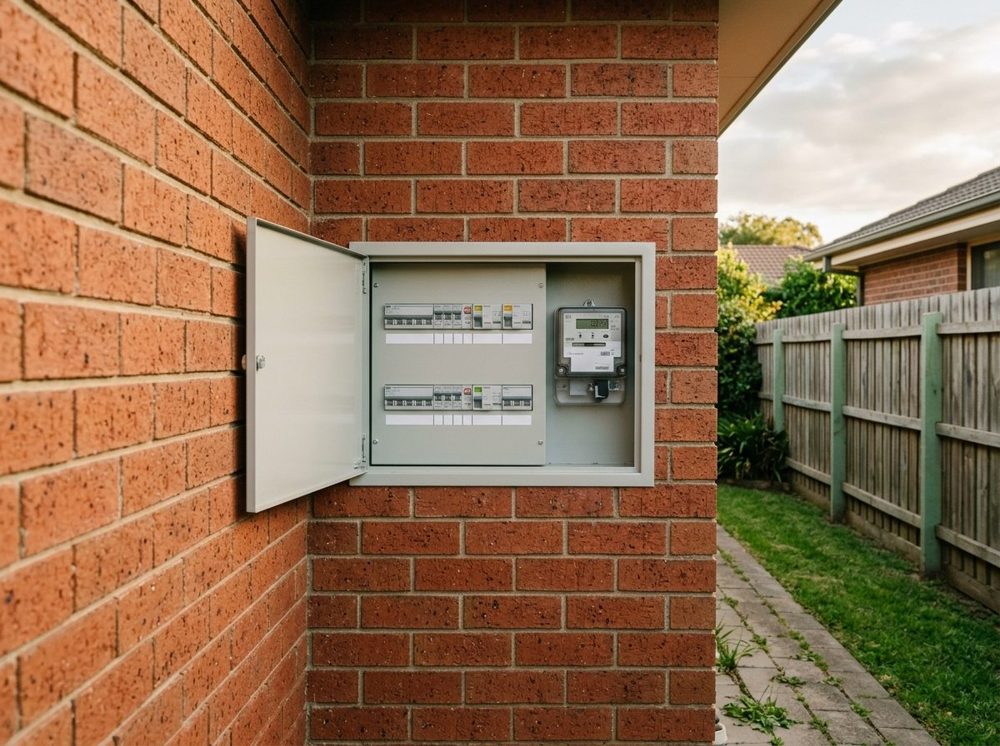

Ulladulla is the southern end of our run, and worth the drive. We take jobs in and around town, Mollymook, Milton and Burrill Lake.
A mix of established homes, new builds and holiday places along the coast. The work down here is much the same as the Bay: switchboards due for an upgrade, feature lighting on renovations, and TV, NBN and networking for houses that sit empty part of the year.
Licensed NSW electrician (297516C), fully insured, every job tested and certified before we leave. See electrical services and data and networking.
